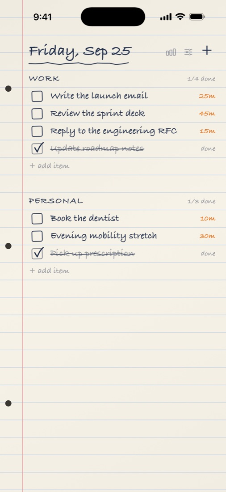
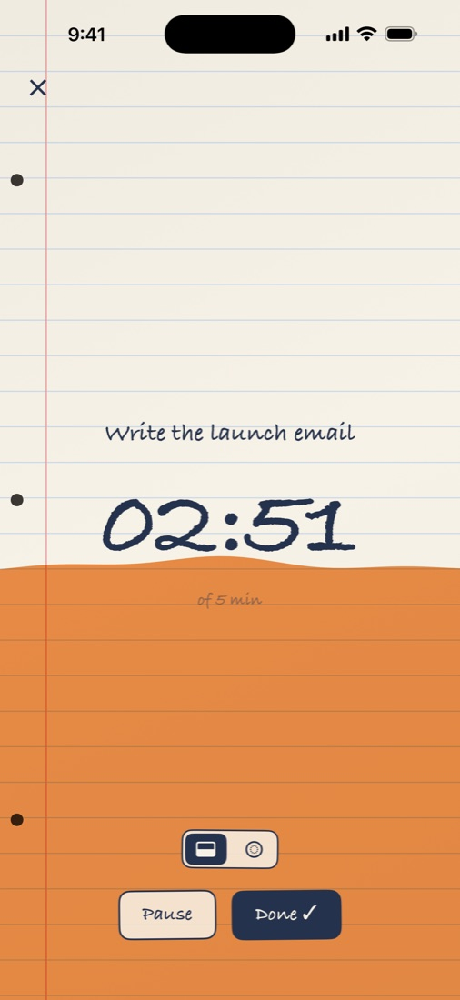
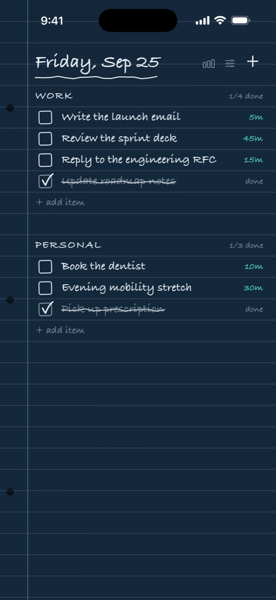

A to-do list on paper
Write it down. Tap it. Watch the page fill while you work.
Crossed Off is a to-do list that looks and feels like a real notebook page. Tap any item and it asks how long the task will take, then the page slowly fills with marker as the minutes go by. When you're done, it gets crossed off in ink.



Free, forever
- One list, with as many items as you like
- The full-page fill timer
- Estimates, checking off, crossing out
- Ruled paper and navy ink
Unlock everything, once
One payment, no subscription. It adds:
- Graph, dot grid, legal pad and blueprint paper
- Five more ink colours
- As many lists as you like
- The ring timer
- Focus stats, week by week
- The Lock Screen timer and the Home Screen widget
Private by design
No account. No ads. No analytics. No tracking. Your lists never leave your device. Read the privacy policy.